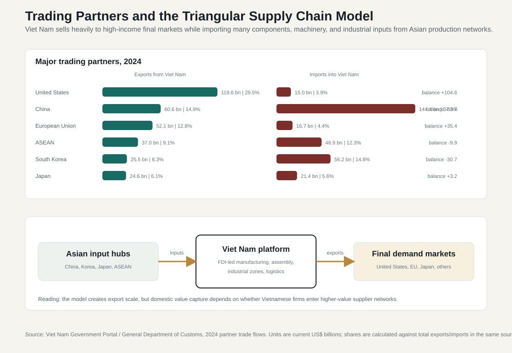
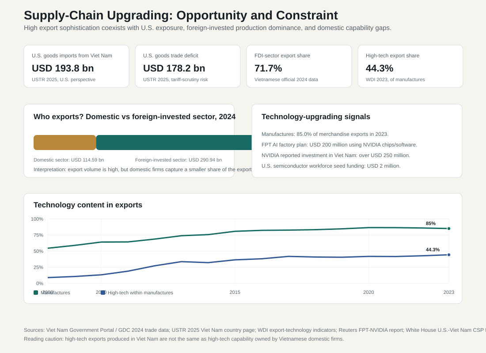

10.3 Trading Partners, Supply Chains, and Technology Upgrading
ASEAN comparative lens (2026). Vietnam should be read in ASEAN comparison as ASEAN's most prominent party-led, export-manufacturing upgrading case. Unlike the Philippines' service-remittance profile, Thailand's older industrial-tourism base, Malaysia's resource-industrial federal structure, or Indonesia's archipelagic domestic-market scale, Vietnam's comparative issue is how a socialist party-state manages very open global production networks. For this section, the regional comparison should compare trade, FDI, current-account structure, supply-chain depth, remittances, tourism receipts, and regional integration with ASEAN peers. Local comparable indicators show: population 100.99 million (2024), rank 3 among the nine ASEAN reports in this workspace; GDP US$476.39 billion (2024), rank 4 among the nine ASEAN reports in this workspace; GDP per capita US$4,717 (2024), rank 5 among the nine ASEAN reports in this workspace; real GDP growth 7.09% (2024), rank 1 among the nine ASEAN reports in this workspace; government effectiveness 0.09 (2023), rank 6 among the nine ASEAN reports in this workspace; internet use 84.15% (2024), rank 4 among the nine ASEAN reports in this workspace. Use `sources/documents/regional/asean_comparative_lens_2026.md` together with ASEANstats, ASEAN Secretariat materials, and the country processed-indicator files before making cross-ASEAN claims.
Viet Nam's trade structure should not be read simply as "exports are increasing." It is a triangular production system. The country sells heavily to high-income final markets, especially the United States and the European Union, while importing many components, machinery, materials, and industrial inputs from Asian production networks centered on China, South Korea, Japan, Taiwan, and ASEAN. FDI-led factories then convert those inputs into exported goods. This model has generated extraordinary trade growth, but it also creates exposure to U.S. market risk, Chinese input dependence, weak domestic supplier linkages, and limits to domestic technological ownership.
The trading-partner pattern reveals the dual structure of the development model. On the export side, the United States is the most important market. Viet Nam Government Portal / General Department of Customs data report that Viet Nam exported USD 119.6 billion to the United States in 2024 and imported USD 15.0 billion from the United States, producing a bilateral surplus of about USD 104.6 billion. Reuters, using public trade data, reported a higher 2024 U.S.-market exposure estimate: U.S.-bound exports of about USD 142.4 billion, roughly 29 percent of Viet Nam's exports and about 30 percent of GDP. The exact dollar value differs across reporting systems, but the policy meaning is the same: Viet Nam's export model is highly exposed to the U.S. market.
USTR data show how large this relationship became from the U.S. trade-policy perspective. In 2025, U.S. goods trade with Viet Nam reached an estimated USD 209.5 billion. U.S. goods imports from Viet Nam were USD 193.8 billion, while U.S. goods exports to Viet Nam were USD 15.7 billion, leaving a U.S. goods trade deficit of USD 178.2 billion. This scale is an opportunity because it gives Viet Nam access to a large, high-income consumer market. It is also a vulnerability because it exposes Viet Nam to tariff disputes, rules-of-origin scrutiny, anti-circumvention investigations, labor and environmental standards, customs transparency demands, and geopolitical pressure.

The import side shows a different dependence. China is Viet Nam's largest import source in the 2024 official data, with imports of USD 144.3 billion and exports to China of USD 60.6 billion. South Korea also matters strongly, with imports of USD 56.2 billion and exports of USD 25.5 billion. ASEAN supplied USD 46.9 billion in imports, while Japan supplied USD 21.4 billion. These numbers show why Viet Nam's export competitiveness is partly built on imported intermediate goods. The country exports large volumes to the United States and Europe, but many of the components, machinery, textiles, electronics inputs, and production materials originate in China and other Asian partners.
This is the core supply-chain structure: Western final demand plus Asian intermediate-input dependence. It is not a simple weakness. Access to efficient Asian suppliers allows Viet Nam to produce at scale, meet delivery deadlines, and enter global value chains quickly. But it limits domestic value capture when local suppliers cannot provide components, materials, design, engineering, testing, certification, logistics, or industrial services at the standards multinational firms require.
| Partner or bloc, 2024 | Viet Nam exports to partner | Viet Nam imports from partner | Balance | Supply-chain meaning |
|---|---|---|---|---|
| United States | USD 119.6 bn | USD 15.0 bn | +USD 104.6 bn | Largest final-demand market; high tariff and compliance exposure. |
| China | USD 60.6 bn | USD 144.3 bn | -USD 83.7 bn | Largest input supplier; machinery, components, materials, and industrial inputs. |
| European Union | USD 52.1 bn | USD 16.7 bn | +USD 35.4 bn | High-income export market with standards and rules-of-origin requirements. |
| ASEAN | USD 37.0 bn | USD 46.9 bn | -USD 9.9 bn | Regional market and production network. |
| South Korea | USD 25.5 bn | USD 56.2 bn | -USD 30.7 bn | FDI-linked electronics, machinery, components, and technology networks. |
| Japan | USD 24.6 bn | USD 21.4 bn | +USD 3.2 bn | Technology, capital goods, quality standards, and supply-chain upgrading. |
10.3.1 FDI-Led Supply Chains and Domestic Value Capture
FDI is the mechanism that makes the triangular trade structure work. Foreign-invested firms locate production in Viet Nam, import machinery and components from Asian suppliers, use Viet Nam's labor, land, infrastructure, and industrial-zone system, and export to the United States, Europe, Japan, and other markets. This has generated jobs, foreign exchange, logistics investment, industrial learning, and rapid export growth.
The same mechanism also explains the domestic value-added constraint. Viet Nam Government Portal / General Department of Customs data report total merchandise exports of USD 405.53 billion in 2024. Of this, the domestic sector exported USD 114.59 billion, while the foreign-invested sector, including crude oil, exported USD 290.94 billion. That means foreign-invested firms accounted for about 71.7 percent of merchandise exports. The figure is not a criticism of FDI; it is evidence of how central FDI is to the export model. But it also shows why Viet Nam's next development challenge is less about attracting more investment than increasing the domestic share of components, services, engineering, supplier activity, and technology inside the export system.
Domestic firms often struggle to enter multinational supplier networks. They may lack quality certification, scale, precision manufacturing capacity, stable finance, management systems, intellectual property compliance, environmental compliance, design capability, or delivery reliability. As a result, high export volume can coexist with limited domestic spillover. The economy can look technologically sophisticated at the export-goods level while domestic firms remain concentrated in lower-value stages of the chain.

10.3.2 U.S.-China Rivalry and China-Plus-One Relocation
Viet Nam's supply-chain position has been reshaped by U.S.-China strategic competition. Since the first U.S.-China trade war, multinational firms have used Viet Nam as part of a China-plus-one strategy. Production rarely left China in a clean transfer and simply became Vietnamese. More often, firms diversified assembly, final processing, or additional capacity into Viet Nam while maintaining input, component, machinery, and managerial links with China and other Asian production hubs.
This gives Viet Nam a geopolitical opportunity. It can attract firms seeking supply-chain diversification, reduce overconcentration risk for multinational companies, and deepen its role in Asian manufacturing networks. But it also creates scrutiny. If Viet Nam's exports to the United States rise while imports of Chinese components also rise, U.S. authorities may pay closer attention to transshipment, rules of origin, anti-circumvention, and domestic value-added verification. Viet Nam therefore needs stronger customs administration, origin certification, product traceability, and compliance systems. Supply-chain upgrading is not only about factories; it is also about administrative credibility.
10.3.3 Technology Upgrading: Production Location versus Domestic Capability
Technology upgrading is the decisive next-stage challenge. WDI data show that manufactures accounted for 85.0 percent of merchandise exports in 2023, and high-technology exports accounted for 44.3 percent of manufactured exports. These are impressive figures for a lower-middle-income economy. They show that goods exported from Viet Nam increasingly come from electronics, machinery, phones, computers, components, and technology-intensive manufacturing chains.
The interpretation must be careful. High-tech exports produced in Viet Nam are not the same as high-tech capability owned by Vietnamese firms. A phone, computer component, chip-related product, or electronic device may be assembled in Viet Nam using imported inputs, foreign intellectual property, foreign design, multinational management, and supplier networks controlled outside the country. The domestic gains are still meaningful: jobs, wages, infrastructure use, logistics, taxes, local services, learning by workers, and some supplier opportunities. But national technological capability requires more: component production, engineering, design, testing, standards, data infrastructure, intellectual property, domestic R&D, and Vietnamese-owned firms that can compete in higher-value functions.
Recent technology partnerships show that Viet Nam is trying to move up the ladder. The 2023 U.S.-Viet Nam Comprehensive Strategic Partnership placed science, technology, innovation, and semiconductor ecosystem development at the center of bilateral cooperation. The White House fact sheet announced initial U.S. seed funding for semiconductor workforce development. In the private sector, FPT announced a USD 200 million AI factory using NVIDIA chips and software, and Reuters reported that NVIDIA had already invested more than USD 250 million in Viet Nam. These developments matter because the upgrading agenda is no longer limited to garments, footwear, furniture, and basic electronics assembly. It increasingly includes semiconductors, AI, cloud services, data infrastructure, software, digital engineering, and automation.
Still, Viet Nam is not yet a high-technology innovation economy in the same sense as Korea, Taiwan, Japan, or Singapore. Much of the high-tech export value remains embedded in foreign-invested production networks. The policy test is whether Viet Nam can convert the presence of global firms into domestic capability. That requires supplier-development programs, vocational and engineering education, university-industry collaboration, applied research funding, standards laboratories, certification bodies, intellectual-property enforcement, data infrastructure, and stronger domestic private firms.
10.3.4 Partner Diversification and Strategic Autonomy
Trade partner diversification remains necessary. Viet Nam benefits from access to the United States, China, ASEAN, Japan, South Korea, the EU, India, Australia, and other partners. But each relationship carries a different risk. The United States offers demand but also tariff and compliance pressure. China offers input supply and geographic connectivity but creates dependence and strategic anxiety. South Korea and Japan provide investment, technology, quality standards, and production networks, but their role can also reinforce foreign-firm dominance if domestic suppliers do not upgrade. ASEAN offers regional diversification, but its market and technology role remains different from that of the United States, China, Korea, and Japan.
Strategic autonomy therefore does not mean self-sufficiency. A small open economy cannot and should not produce every input domestically. The goal is resilience and value capture: diversify markets where possible, verify origin rules, build alternative input sources for critical products, strengthen local suppliers, and increase domestic services and engineering content in exports.
10.3.5 Administrative Implications
Supply-chain upgrading is an administrative-capacity problem. Customs agencies must manage rules-of-origin compliance and prevent transshipment risks. Industrial ministries must support supplier upgrading and technology extension. Education institutions must produce technical workers, engineers, semiconductor specialists, data scientists, logistics managers, and compliance professionals. Provincial governments must improve industrial-zone governance, land procedures, infrastructure coordination, labor services, and investment aftercare. Science and technology agencies must support standards, testing, certification, intellectual property, and applied research. Digital agencies must support data infrastructure, cybersecurity, cloud capacity, and public digital services.
This is why the trade chapter belongs in a book on political administration and policy. Viet Nam's external success depends on the ability of the party-state to coordinate across trade, investment, customs, education, science, technology, infrastructure, finance, and local government. Export upgrading is not produced by market access alone. It is produced when firms and public agencies together solve standards, logistics, skills, land, data, technology, and compliance problems.
10.3.6 Policy Implications
Viet Nam should shift from a trade-expansion strategy to a value-capture strategy. First, trade policy should focus on domestic value added, rules-of-origin compliance, supplier development, and product traceability, not only export volume. Second, FDI policy should prioritize technology transfer, local procurement, workforce development, domestic supplier integration, and higher-value functions such as design, testing, engineering, logistics management, and R&D. Third, Viet Nam should reduce excessive dependence on any single final market by diversifying exports beyond the United States while maintaining U.S. access. Fourth, it should manage input dependence on China by developing alternative suppliers where feasible, without undermining efficient regional production networks. Fifth, technology upgrading should be treated as an economy-wide agenda involving education, innovation, standards, digital infrastructure, intellectual property, finance, and domestic firm growth.
| Dimension | Current pattern | Policy issue |
|---|---|---|
| Export markets | United States, EU, Japan, South Korea, China, and ASEAN | High U.S. exposure creates tariff, rules-of-origin, and compliance risk. |
| Import sources | China, South Korea, Japan, ASEAN, and Taiwan-linked production networks | Imported intermediate goods support exports but can limit domestic value capture. |
| Supply-chain model | FDI-led assembly and manufacturing | Need stronger Vietnamese supplier participation. |
| U.S.-China rivalry | Viet Nam benefits from China-plus-one relocation | Need to manage transshipment scrutiny and geopolitical pressure. |
| Domestic firms | Many remain outside high-value supplier networks | Need finance, certification, management, standards, and technology upgrading. |
| Technology upgrading | Semiconductors, AI, cloud, electronics, automation, and digital engineering are emerging | Need skills, R&D, data infrastructure, and domestic ownership. |
| FDI quality | Large export role by foreign-invested firms | Need stronger spillovers, local procurement, and training. |
| Strategic autonomy | Diversified partnerships but concentrated dependencies | Need market diversification and supply-chain resilience. |
What matters now is whether Viet Nam can use its current position in global supply chains as a platform for upgrading. If it succeeds, trade and FDI will support movement toward higher income and stronger technological autonomy. If it fails, Viet Nam may remain a highly successful export platform while capturing only a limited share of the knowledge, profits, and strategic capabilities embedded in global production.